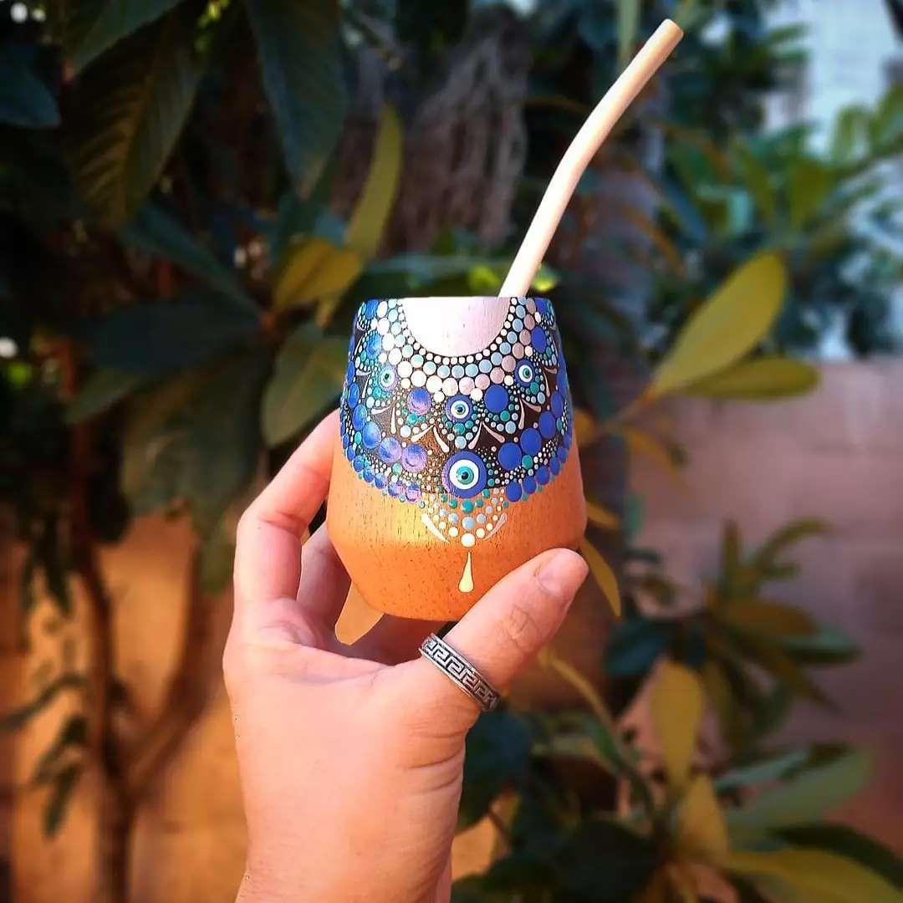

Mates
Las mandalas en puntillismo son obras de arte detalladas y cautivadoras. Cada punto, cuidadosamente colocado sobre el mate, se convierte en un elemento crucial de un diseño complejo y armonioso. La técnica del puntillismo en mate permite crear mandalas que, al contemplarlas de cerca, revelan la minuciosidad y dedicación del artista, mientras que al observarlas desde lejos, deslumbran con su belleza y simetría.
